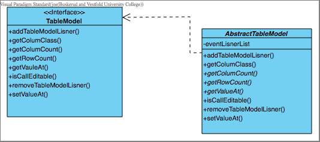
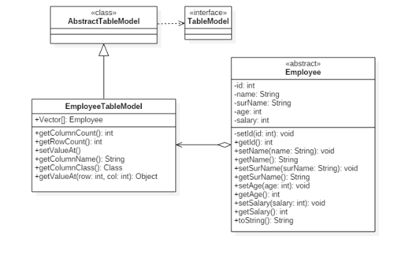
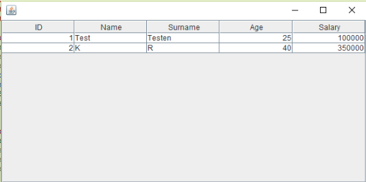
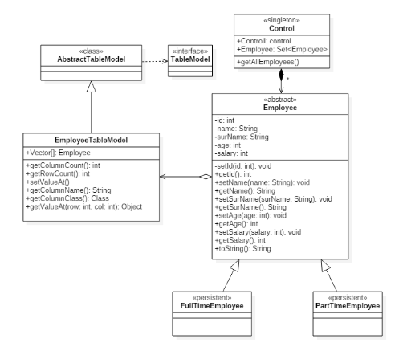

AbstractTablemodel for uøvde
Under finnes et bilde til et enkelt klassediagram av AbstractTableModel

{kind=link}
AbstractTableModel er en klasse som oppfører seg som en beholder av alle enhetene i tablemodel, på en måte. Vi kan si at AbstractTableModel er avhengig av TableModel, dette kan sees ved at den stiplede pilen går fra AbstractTableModel til TableModel. Klassen AbstractTableModel er abstrakt fordi den implementerer TableModel, som er et interface, uten å oppfylle hele kontrakten. Dette betyr altså at en ny spesialisering av AbstractTableModel må oppfylle resten av kontrakten for denne.
public int getRowCount();
public int getColumnCount();
public Object getValueAt(int row, int column);
Disse må defineres og kan gjøres slik:
En lokal Arraylist med navnene for dataradene kan benyttes. Det lokale lageret kalles cache.
getRowCount () trenger derfor kun å returnere størrelsen på cache objektet slik:
public int getRowCount(){
return cache.size();
}
getColoumnCount() metoden returnerer hvor mange kolonner det finnes i tabellstrukturen. Som det her:
public int getColoumnCount(){
return colnames.size();}
getValueAt() funksjonen returnerer antall kolonner og rader som det her:
public Object getValueAt(int row,int col){
return data[row][col];
}
JTable bruker disse metodene til å finne ut hvor mange felt(rader og kolonner) det er, og henter verdiene( som et type objekt) av hvert felt. getValueAt benyttes for å hente ut antall rader og kolonner og returnerer dette.
Disse to metodene danner sammen en god løsning som gir den utvidede AbstractTableModel to datastrukturer som er enkle å håndtere. Man kan da sette objektet inn i et JTable-objekt. Rammeverket bruker da getColoumnCount() og getRowCount() til å fylle ut dataen i rader og kolonner. Hvis det da ønskes, kan kolonne-navnene redigeres ved hjelp av å overstyre getColoumnName()-metoden. Hvis denne metoden overstyres utnytter rammeverket dette til å vise kolonnenavnene i JTable-objektet.
Første linjen definerer kolonnenavnene, i dette tilfellet “user”, “password” og “age”. Den andre linjen returnerer kolonnenavnene i getColumnName metoden og setter navnene i JTable. De to kodelinjene under er de som snakkes om.
private static final String[] COLUMN_NAMES = {"User", "Password", "Age"};
public String getColumnName(int col) { return COLUMN_NAMES[col]; }
Abstracttablemodel for øvede
{kind=link}
Her ser vi et klassediagram over AbstractTableModel. AbstracTableModel er en klasse som er avhengig av interfacet TableModel som igjen er avhengig av JTable. Klassen AbstractTableModel implementerer også Serializable som vist på uml-diagrammet. Serializable er en klasse som gjør det mulig å overføre objekter via nettet. I dette tilfellet vil tabellen som lages være objektet som overføres ved hjelp av serializable.
{kind=link}
Her kan vi si et eksempel på hvordan de to metodene som er abstrakte kan settes opp, og hvor de blir brukt til å finne det siste objektet i raden og kolonnen. JTable kaller først for å finne indexen på den siste elementet i raden, så kaller den for å finne indexen på kolonnen,for så å putte disse verdiene inn i getValue metoden som returnerer objektet på denne plassen. Her har vi et lite eksempel, med koden som er tatt fra delen av introduksjonen, for de som ikke er så drevne.
{kind=link}
Her har vi et diagram som viser hva AbstractTableModel arver, hvem pakker som både den og JTable ligger under, dette kan være nyttig for å orientere seg hvor disse pakkene ligger og hvordan sammenhenger og tilhørigheter er. AbstractTableModel implementerer også Serializable men vi har valgt å ikke ta det med her for å gjøre skjemaet lettere og mer oversiktlig å forstå.
Et eksempel på bruk av AbstractTableModel:
For å slippe å implementere alle metodene til TableModel, kan vi utvide interfacet(extends) ved å legge til AbstractTableModel. Ved å gjøre dette trenger vi i teorien bare å implementere tre metoder
· En metode som returnerer antallet rader
· En metode som returnerer antallet kolonner
· En metode som returnerer verdien som hører til en celle.
Under ser vi et eksempel på implementasjon som viser et antall ansatte med et brukergrensesnitt basert på Swing. Vi lager TableModel som tilpasser seg en matrise av ansatte.
{kind=link}
Vi lager først et objekt Employee med tilhørende metoder
public class Employee {
private int id;
private String name;
private string surName;
private int age
private int salary
}
Så bygger vi opp TableModel klassen med metodene til AbstractTableModel. Dataene fra objektet lagres i dette tilfellet i en Vector, som er en matrise av objekter. Innholdet i en Vector kan hentes ut ved å bruke en index.
Vi definerer her hva som skal være overskriften i hver celle i tabellen i tillegg til Vector.
public class TableModel extends AbstractTableModel {
private static final long serialVersionUID = 1L;
public String[] = m_colNames = { "ID" , "Name", "Surname", "Age", "Salary" };
public Class[] m_colTypes = { Integer.class, String.class, String.class, Integer.class, Integer.class};
Vector mDataVector;
}
Set og Get metodene kan være som følger:
public void setValueAt(Object value, int row, int col){
Employee employeeData = (Employee) (m_DataVector.elementAt(row));
}
public Object getValueAt(int row, int col){
Employee employeeData = (Employee) (m_DataVector.elementAt(row));
}
Vi instansierer objektet i Entry point
public class Main extends JFrame {
private static final long serialVersionUID = 1L;
private TableModel model;
private JTable table;
public Main() {
Vector<Employee> testData = new Vector<Employee>(10, 10);
testData.addElement(new Employee(new Integer(1), "Test", "Testen",(new Integer(25)), (new Integer(100000))));
testData.addElement(new Employee(new Integer(2), "K", "R",(new Integer(40)), (new Integer(350000))));
model = new TableModel(testData);
table = new JTable(model);
}
}
Resultatet:

Modellen kan utvides til å inkludere persistens på objektet. Objektene kan lagres eller hentes fra et lager som for eksempel en relasjonell database. Persistensen kan legges i en kontrollklasse som vil være ansvarlig for endringene i tilstand i programmet.
{kind=link}
Målet er at Control-metoden inneholder alle opplysninger om ansatte, inkludert underklasser. Control.control.getAllEmployees(). Denne forteller Employee objektet om å gi all informasjon om seg selv, FullTimeEmployee og PartTimeEmployee.